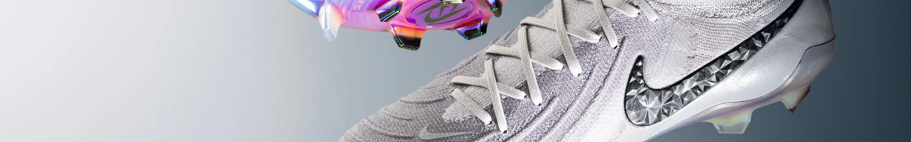

SOBRE CR7
Cristiano Ronaldo continua a ser uma figura influente tanto no futebol quanto fora dele, com um impacto duradouro na cultura esportiva global.
Cristiano Ronaldo dos Santos Aveiro, conhecido simplesmente como Cristiano Ronaldo, é um dos jogadores de futebol mais famosos e talentosos da história. Nascido em 5 de fevereiro de 1985, em Funchal, Madeira, Portugal, Ronaldo é amplamente reconhecido por sua habilidade técnica, velocidade e capacidade de marcar gols.
Aqui estão alguns pontos notáveis sobre ele:
Carreira Internacional: Ronaldo começou sua carreira profissional no Sporting CP antes de se transferir para o Manchester United em 2003.
Durante seu tempo no United, ele ganhou três títulos da Premier League e uma Liga dos Campeões da UEFA. Em 2009, ele se transferiu para o Real Madrid, onde se tornou o maior artilheiro da história do clube e conquistou quatro Ligas dos Campeões.
Mais tarde, jogou pela Juventus na Serie A e, recentemente, retornou ao Manchester United e depois foi para o Al Nassr, na Arábia Saudita.
Recordes e Conquistas: Cristiano Ronaldo é um dos jogadores mais premiados do futebol. Ele ganhou múltiplos títulos da FIFA Ballon d'Or, que são dados ao melhor jogador do mundo. Além disso, ele é o único jogador a ter marcado em cinco Copas do Mundo e em cinco Ligas dos Campeões da UEFA.
Seleção Portuguesa: Ronaldo também é um jogador crucial para a seleção de Portugal, com a qual venceu o Campeonato Europeu de 2016 e a Liga das Nações da UEFA em 2019.